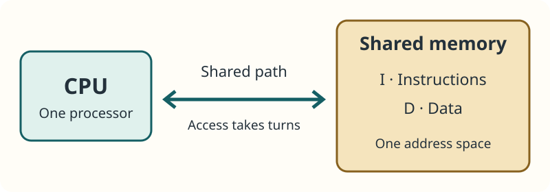
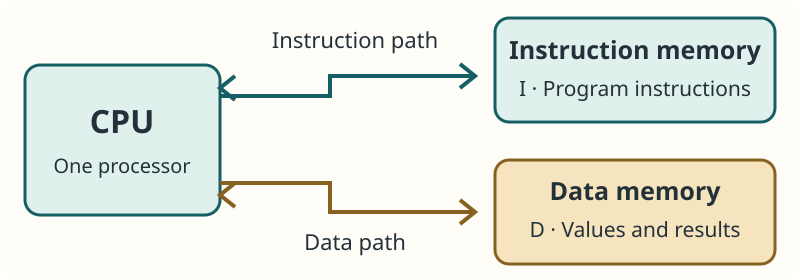

01 · Stored-program architecture
Same computer, different jobs
You close a game and open a spreadsheet. The processor has not been replaced. What changed?
Play a game
Instructions respond to controls, update positions and draw a scene.
Use a spreadsheet
Instructions calculate totals and display cells.
Same hardware
The CPU carries out different stored instructions to perform a different job.
A computer’s behaviour depends on the program it runs. We will explore where the instructions and data are kept, and how the CPU reaches them.
02 · Stored-program architecture
Instructions tell; data supplies the values
- Instruction
Add two values - Data
7 and 2 - Result
9
Instructions
Operations for the processor to carry out: read a value, add, compare or store a result.
Data
Values being used or produced: numbers, text, image values or an answer.
Both can be represented in binary. Their role depends on how the computer uses them; an instruction is not simply “text” and data is not only numbers.
03 · Stored-program architecture
The stored-program principle
A stored-program computer holds program instructions in memory so the CPU can fetch and execute them.
- Store machine-code instructions in memory
- CPU fetches an instruction
- CPU interprets and executes it
- Continue with the program
Changing the stored program can change the task without rewiring the processor.
Both Von Neumann and Harvard designs can use stored programs. They differ in how instruction memory and data memory are arranged and accessed.
04 · Stored-program architecture
Follow a tiny program
Program · the actions
- Read the stored value.
- Add 2.
- Display the answer.
Data · the values
7 → 9
Start with 7. Adding 2 produces 9.
Change the program
Keep the starting value 7, but replace “add 2” with “multiply by 2”.
7 → 14
The same CPU can produce a different result because it follows different instructions.
These are readable teaching instructions, not a real machine-code instruction set. The detailed instruction cycle comes later.
05 · Stored-program architecture
What does each part do?
- Input
Supply values or commands - CPU
Interpret instructions and process values - Output
Present results
Memory
Holds the instructions and data the processor needs.
Control unit
Coordinates fetching and carrying out instructions.
Arithmetic/logic unit
Performs operations such as addition and comparison.
The CPU processes; memory stores. An architecture diagram shows how these parts are organised and connected.
06 · Stored-program architecture
Why does the CPU need a memory path?
Instruction fetch
Memory → CPU
What operation should happen next?
What operation should happen next?
Data read
Memory → CPU
Which value does the operation need?
Which value does the operation need?
Data write
CPU → memory
Where should the result be kept?
Where should the result be kept?
A bus is a communication connection carrying signals between components. Here, a “path” summarises the memory interface; real buses carry address, data and control signals.
The diagrams concern CPU memory access, not downloading files or a disk cable. We do not need individual registers or bus timings yet.
Von Neumann architecture
07 · Stored-program architecture
Von Neumann: one shared arrangement

Shared memory
Instructions and data use the same memory/address space.
Shared access
Instruction fetches and data transfers use the same path in the classic simplified model.
“One memory” describes the organisation. It does not mean there must be exactly one physical memory chip.
10 · Stored-program architecture
Why can the CPU end up waiting?
- CPU needs instructions and data
- Memory access has limited capacity
- Requests queue or wait
- Useful processing can be delayed
The Von Neumann bottleneck is the limitation on performance caused by moving instructions and data between the CPU and shared memory, including competition for the shared path.
Faster CPU alone?
A processor may still wait if memory cannot supply what it needs quickly enough.
Always equally serious?
No. The effect depends on memory speed, access patterns and how much the task needs to transfer.
This is a possible performance limit, not a claim that the CPU does nothing during every memory access.
Harvard architecture
11 · Stored-program architecture
Harvard: separate instructions and data

Separate memories
The classic Harvard model has separate instruction and data memories/address spaces.
Separate paths
An instruction fetch and a data transfer can use different interfaces.
Harvard is still a stored-program design. Instructions are stored in instruction memory, which may be non-volatile program memory.
12 · Stored-program architecture
What can happen at the same time?
Instruction side
Fetch a forthcoming instruction from instruction memory.
Data side
Read or write data for an instruction already being processed.
- One instruction transfer
- Separate paths allow overlap
- One data transfer
Simultaneous memory access does not mean executing two instructions at once, using two CPUs, or finishing every program twice as fast.
It removes this particular conflict when both paths have useful work. Other dependencies and limits can still cause waiting.
13 · Stored-program architecture
Memory Access Lab
Two queues contain memory requests that are already ready and independent. I means instruction fetch; D means data transfer. Predict which design clears the queues first.
Ready to compare memory access.
These slots represent equal transfer opportunities, not measured CPU clock cycles. The lab ignores caches, execution and memory delays; it demonstrates path contention only.
Try “instruction requests only”. Explain why a second, unused data path provides no benefit in that example.
Pause after one slot. Ask which request waited, then compare the instruction-only workload before revealing the final count.
14 · Stored-program architecture
Compare the classic models
| Feature | Von Neumann | Harvard |
|---|---|---|
| Stored instructions? | Yes | Yes |
| Instruction/data memory | Shared memory/address space | Separate memories/address spaces |
| Memory access | Shared path in the classic model | Separate instruction and data paths |
| Competing transfers | May wait for the shared path | Can overlap across separate paths |
| Key trade-off | Flexible shared organisation; possible contention | Separate access; added organisation and interfaces |
15 · Stored-program architecture
A benefit usually has a trade-off
Von Neumann · flexibility
A common memory space can accommodate different amounts of instructions and data. Shared organisation is conceptually simpler.
Von Neumann · limitation
Instruction and data traffic compete for memory access, potentially limiting throughput.
Harvard · benefit
Independent paths allow useful instruction/data access overlap. Instruction and data memories can be designed differently.
Harvard · limitation
Separate spaces and interfaces add design considerations; spare instruction capacity is not automatically available as ordinary data memory.
Actual cost and performance depend on the implementation. Separate paths are a feature to justify, not a guarantee that a device is better.
16 · Stored-program architecture
Real processors can combine ideas
- Near the CPU
Separate instruction and data caches - Further away
Shared memory levels - Result
A mixture of the two ideas
A cache is a small, fast store of copies near the processor. Some designs use separate instruction/data caches while sharing memory elsewhere; this is one form of modified Harvard organisation.
Describe the level and features given in the question. A real laptop need not match a pure textbook diagram at every level.
Detailed cache behaviour belongs in the CPU performance and cache lesson.
Real examples
Microchip’s AVR core overview describes separate program/data memories and buses. Arm’s cache explanation illustrates separate instruction/data caches. These are examples, not rules for every device.
Applying the models
17 · Stored-program architecture
Choose from the workload, not the label
Flexible shared-memory design
If a task values a common memory space and simpler organisation, a Von Neumann-style model may fit.
Repeated instruction/data traffic
If useful fetches and data transfers are frequently ready together, Harvard-style separation may reduce contention.
Check the evidence
Consider memory requirements, throughput needs, complexity and the actual design. “It is embedded” alone is not a justification.
Make the link: feature → effect on this workload → benefit or limitation.
18 · Stored-program architecture
Which model fits the evidence?
Choose the best-supported answer and its reason. Judge the evidence provided, not the familiarity of a device name.
A teaching computer has a small design budget and needs a common memory pool for differently sized programs and data.
A signal-processing design frequently has an instruction fetch and a data transfer ready together. Reducing memory-access contention is the stated priority.
A device is described only as “a traffic-light controller”. No memory layout or transfer requirements are given.
19 · Stored-program architecture
Build an explanation, not a list
- Feature
Harvard uses separate instruction/data memories and paths. - Consequence
A fetch and a data access can overlap. - Application
This can reduce waiting in the stated signal-processing workload. - Judgement
The gain may justify extra complexity if memory contention is a significant limit.
A strong answer explains why the feature matters here. “Harvard is faster” leaves out the cause, conditions and trade-off.
For a bottleneck question, reverse the reasoning: shared path → competing requests → possible waiting → reduced throughput.
Practice
20 · Stored-program architecture
Common exam mistakes
“Only Von Neumann stores programs”
Both models can store instructions in memory; the arrangement differs.
“Harvard has two CPUs”
One CPU can connect to two memory paths.
“Two paths means two instructions execute”
The overlap described is an instruction fetch and a data transfer.
“Harvard is always twice as fast”
The toy transfer count is not a prediction of program execution time.
“One memory means one chip”
It describes a shared memory/address-space model.
“All embedded devices use Harvard”
Identify the given memory arrangement and workload rather than assuming from the device category.
21 · Stored-program architecture
Check your understanding
Answer all 12 questions, then check your score. Aim for 9 correct. Choices and your best score save in this browser.
22 · Stored-program architecture
Exam-style practice
Explain features, connect them to consequences and apply them to the task. These are practice questions, not an official mark scheme.
Draft answers save automatically in this browser.
Question 1
Explain the stored-program principle and why it allows one computer to perform different tasks.
Show answer guide
- Instructions are stored in memory as machine code so the CPU can fetch and execute them.
- Changing the stored instructions changes the operations performed without rewiring the processor.
- Apply this to a game versus a spreadsheet or the worked add/multiply example; explain the link rather than just naming applications.
Question 2
Explain how the Von Neumann bottleneck can affect a processor that frequently fetches instructions and accesses data.
Show answer guide
- Identify the shared memory access path and the instruction/data traffic using it.
- Explain contention: one request may wait while the shared path serves another.
- Connect limited memory-transfer capacity to time spent waiting and lower useful throughput. A higher CPU clock speed alone may not solve this.
Question 3
Compare the classic Von Neumann and Harvard memory arrangements and explain their consequences.
Show answer guide
- Compare shared memory/address space with separate instruction/data memories/address spaces.
- Compare a shared path with separate paths, explaining contention versus possible overlap.
- Discuss flexible shared organisation versus the implications of separate spaces/interfaces. Both are stored-program designs; do not guarantee a performance ratio.
Question 4
A signal-processing design repeatedly has instruction fetches and data transfers ready together. Evaluate using a Harvard-style arrangement.
Show answer guide
- Separate instruction/data paths could reduce contention and allow these different transfer types to overlap. Apply that to the repeated traffic in the scenario.
- Separate memory organisation adds interfaces/design choices. Consider whether the benefit addresses the actual performance limit.
- Execution dependencies, memory speed and other parts of the implementation still affect overall throughput.
- Reach a conditional judgement: Harvard-style access may be justified if contention matters enough to outweigh added complexity. The device label alone is not evidence.